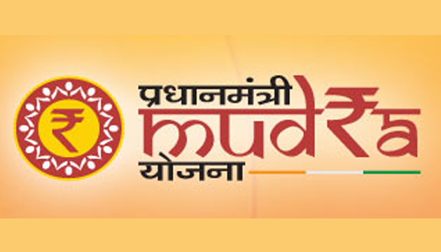

Pradhan Mantri Mudra Yojana
Pradhan Mantri Mudra Yojana is a Government of India scheme, which enables a small borrower to borrow from banks, MFIs, NBFCs for loans upto 10 lakh for non farm income generating activities. Generally, loans upto ` 10 lakh issued by banks under Micro Small Enterprises is given without collaterals.
view moreKaushal Bharat Mission

The Kaushal Bharat Mission, translated as the "Skilled India Mission," is a flagship initiative of the Government of India. Launched with the vision of creating a skilled and job-ready workforce, it aims to meet the demands of a rapidly evolving economy. The mission was introduced to bridge the existing gap between the demand and supply of skilled labor across diverse industries.
view morePM Kisan Samman Nidhi Yojana

Pradhan Mantri Kisan Samman Nidhi is an initiative by the government of India that give farmers up to ₹6,000 per year as minimum income support. With the positive outcome of this scheme, Government of India wanted to implement it as nationwide project and it was announced by Piyush Goyal during the 2019 Interim Union Budget of India on 1 February 2019.
view more